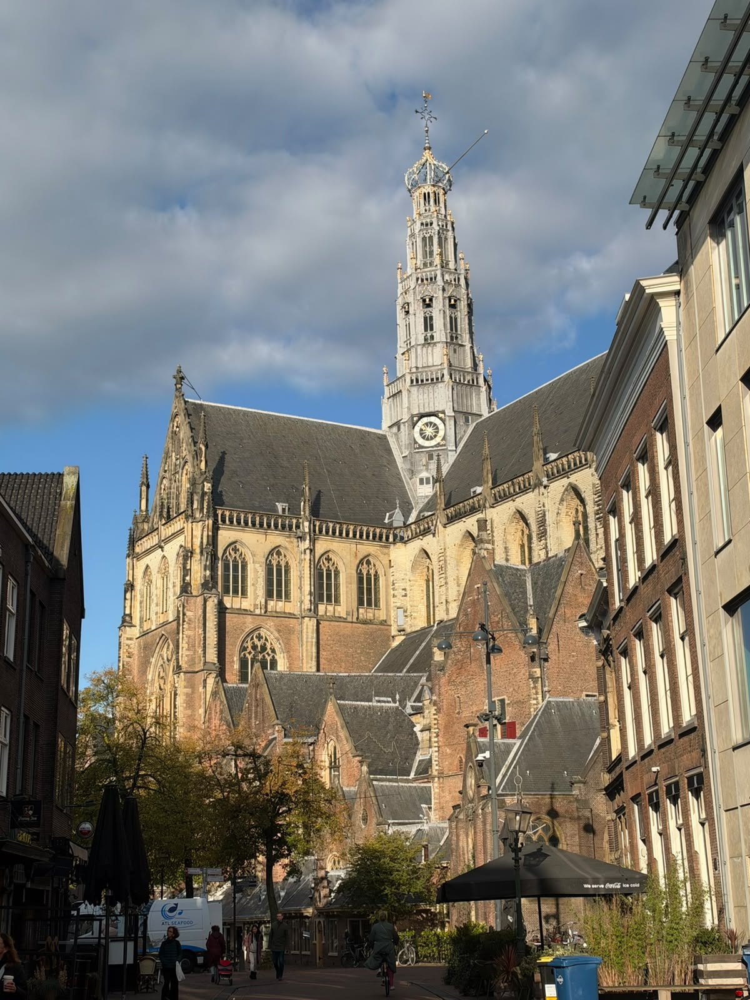
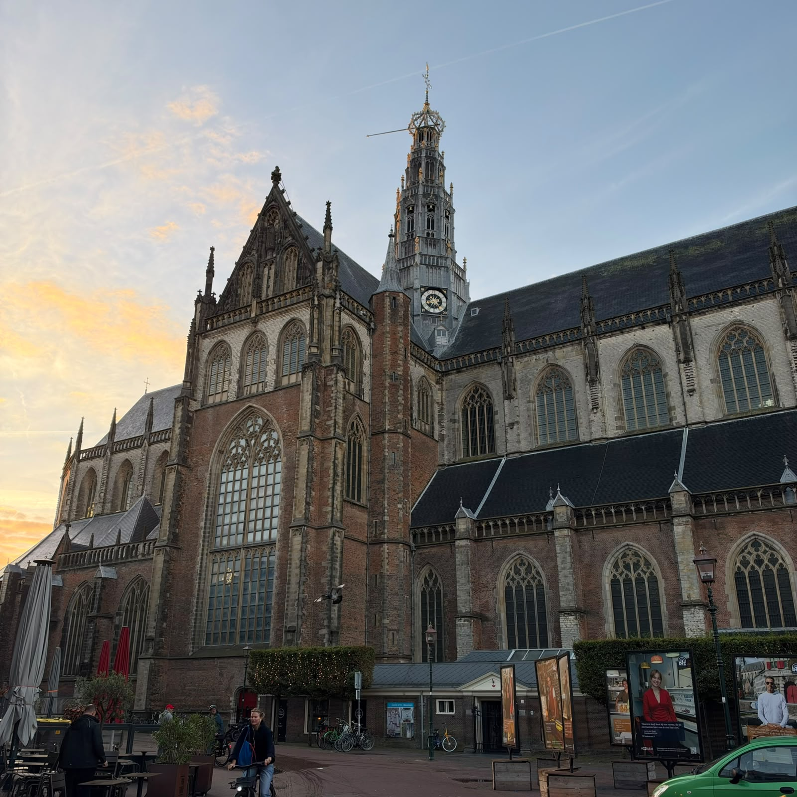
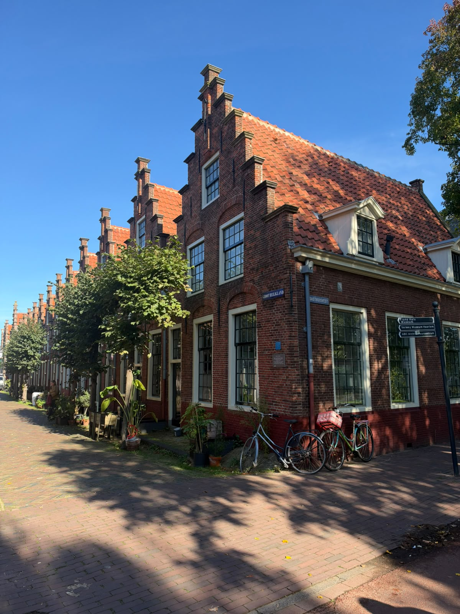

A first-timer’s guide
Discover Haarlem for the First Time
A simple guide to the places, streets, museums and parks worth discovering in Haarlem.
Explore HaarlemA first-timer’s guide
A simple guide to the places, streets, museums and parks worth discovering in Haarlem.
Explore Haarlem
Why visit Haarlem?
Start here

What to see
The main places worth seeing in Haarlem, from the Grote Markt to the Spaarne River.
Learn more
Museums
A short guide to Haarlem’s museums, including Frans Hals and Teylers Museum.
Learn more
Parks & Nature
Where to walk, relax and take a break in Haarlem’s parks and gardens.
Learn more